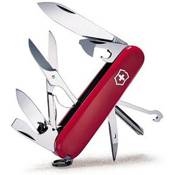
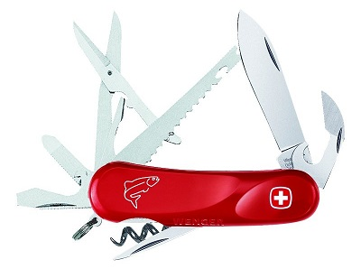

制帽匠巴尔特哈沙·埃尔森纳·奥特的四儿子查尔斯·埃尔森纳（Charles Elsener）下定决心想当一名刀具工人。在德国南部TUTTLINGEN（地名）区度过了几年工人生活后， 他于24岁那年回到他的家乡，并于1884年在瑞士SCHWYZ州（地名，施夫州）的IBACH镇（地名，宜溪镇） 开了一家属于自己的刀具工厂。
在那时SCHWYZ地区几乎没有任何工业，因而很多年轻的农民被迫移民到北美、澳大利亚或新西兰。为了创造新的就业机会，卡尔·埃尔森(Mr. Karl Elsener)纳于1891年发起并创建了瑞士刀匠大师协会， 其主要目的是联合所有瑞士的刀匠以制造当时瑞士军队还必需从德国SOLINGEN（地名）购买的士兵用刀。  1891年10月该协会制造出了第一批发往瑞士军队的军刀。 此后卡尔·埃尔森纳开始制造别的设计精巧的袖珍刀， 他不用数字而用诸如学生刀，军官刀和农民刀等名字来区分这些刀。士兵刀很粗大也很笨重， 因此卡尔·埃尔森纳特别为军官们制造出了较轻且美观的刀， 这种刀除了具备士兵刀上所有的刀片、锥子、罐头起子和螺丝刀外，还有一个小刀片和一个拔塞钻。这种两个弹簧上面装有六个刀体的新模型被卡尔称为“军官刀”。这种设计己于1897年6月12日正式注册。
1909年，卡尔·埃尔森纳的母亲去世，为纪念母亲，他将他母亲的教名VICTORY（维多利亚）作为他的商标。1921年不锈钢被发明出来，因此在IBACH（地名）造出不锈钢刀后INOX一词就与VICTORY合成了一直沿用至今的VICTORINOX商标。
维氏
维氏所制造的不单只是世界驰名的‘军刀’，更是一种被人们广泛应用于旅游、登山、潜水、航模运动、修理自行车，汽车及日常生活中的‘多功能工具’。 维氏军官刀是送礼佳品，追求尽善尽美是瑞士维氏军刀Victorinox的一贯传统，多年的研制与创新使军刀的每个组成部分都达到了最佳造型，具有最完善的功能；因此被美国数届总统选为白宫礼品，刀柄刻上总统签名赠送来宾。 美国国家宇航局将其列为宇航员随身工具。此外许多世界跨国公司，银行将其刻上其名称或商标作为广告宣传品、会议纪念品赠送客户。
威戈
 纯正威戈瑞士军刀诞生于1893年。在1900年迪欧.威戈(Theo Wenger)先生与总裁亨利.桑多斯(Henger sandoz)先生携手合作下，瑞士威戈公司正式成立。 一个世纪以来，瑞士威戈公司不断丰富.充实.完善有着这百年悠久历史的著名产品。今天威戈公司已成为世界刀具行业中的带头人，更是世界刀具行业的超竞争产品。而威戈纯正瑞士军刀也被人们誉为“使用钟表工艺制造的高品质的刀具产品”。